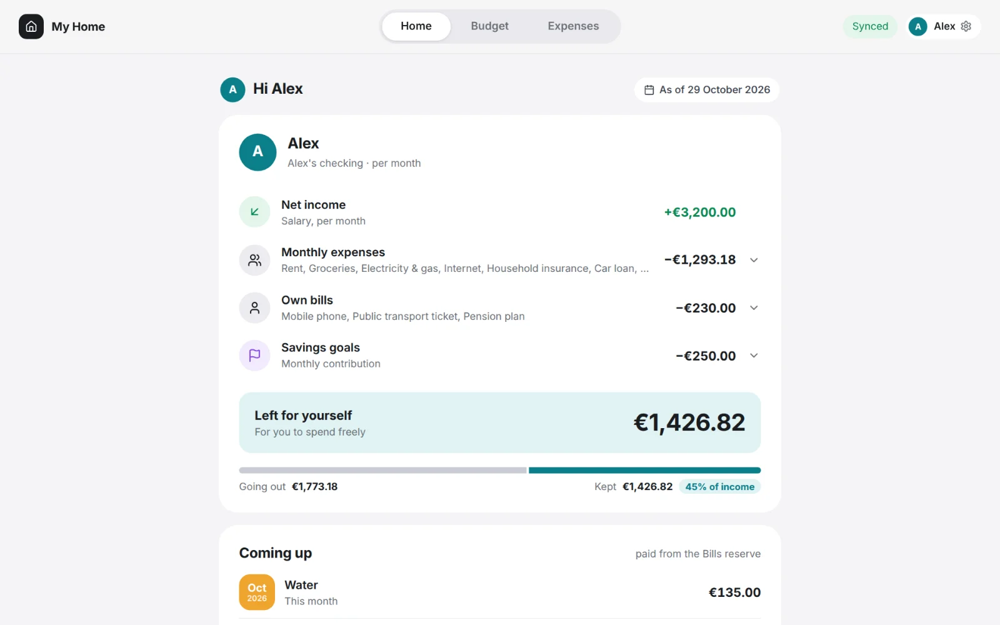

What matters todayWat vandaag telt
Home greets whoever is signed in with their own month: their income, their part of the bills and what's left for them — and the yearly bills that are coming up.
Home begroet wie aangemeld is met de eigen maand: het inkomen, het eigen deel van de kosten en wat er overblijft — en de jaarlijkse facturen die eraan komen.
